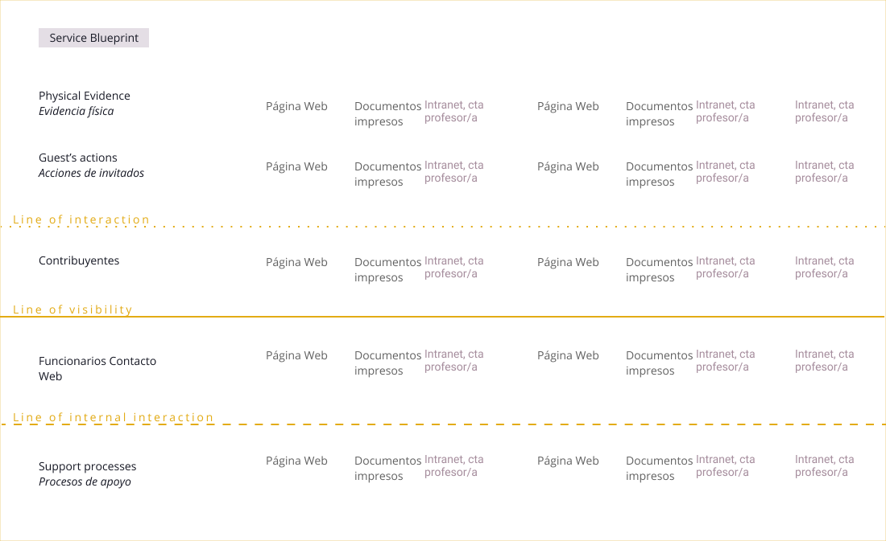

El Servicio de Impuestos Internos es el organismo responsable de la administración tributaria de los impuestos en Chile.
Dentro de sus múltiples funciones, está el de recibir las opiniones, reclamos y sugerencias de los contribuyentes, estas acciones son gestionadas desde tres áreas diferentes: contacto web, a través de la plataforma digital; la mesa de ayuda, que es la vía telefónica; y de forma presencial, en las diferentes sucursales.
Design thinking
UX Research
Information architecture
Prototyping
Figma
El desafío propuso la unificación de los diferentes canales de atención en una sola plataforma que optimice la gestión, que sea clara para contribuyentes y funcionarios; actualizando también su contenido, eliminando las funciones en desuso.
La metodología del Design Thinking, utilizada en este proyecto, pone a disposición herramientas de trabajo que enfocan los descubrimientos y posibles mejoras en la experiencia de los y las usuarias reales.
El primer paso en este proyecto fue realizar entrevistas y testeos con funcionarios y contribuyentes. El objetivo es entender tanto la forma en que usan las diferentes plataformas digitales, como también sus emociones al interactuar con ellas. Esto nos permite identificar flujos de trabajo y paint point que son guías de las propuestas de mejora.
Para sintetizar los aprendizajes y visualizar de mejor forma el enfoque del trabajo, se construye un Service Blueprint. Esta herramienta incluye las diferentes acciones que implica el ingreso de las opiniones, los flujos de interacciones entre los diferentes actores; y el material físico y digital que permite estas interacciones.
Se clasificaron y sintetizaron las necesidades del rediseño del viaje del usuario en:
Identificados los lineamientos de nuestras propuestas, definimos para desarrollar 3 ideas principales:
Aquí una descripción de los resultados
El principal valor de este proyecto fue tener la posibilidad de mejorar no solo el vínculo con las/os contribuyentes, sino que también el contexto laboral de las/os funcionarias/os, buscando la simplicidad y consecuencia con el flujo de trabajo de estas/os.